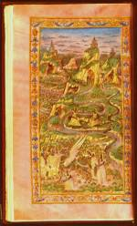

P. Vergilius Maro, Opera (Bucolica, Georgica, Aeneis). Latijn. Handschrift op perkament, 203 ff., 365 x 220 mm. Napels, niet later dan 1495. -- (BPL 6 B)
Dit Vergiliushandschrift, dat op alle bladzijden de triomf van het humanisme uitstraalt, kan op stilistische gronden worden toegeschreven aan de illuminator Cristoforo Maiorana, aanwijsbaar actief in Zuid-Italië, vooral in Napels, van circa 1480 tot 1492. Sporen in het weggeradeerde wapen, dat driemaal in het handschrift is herhaald, wijzen erop dat het is geschreven voor Matteo III Acquaviva (1458-1529), die in 1495 slachtoffer werd van de politieke intrigues volgend op de dood van Ferdinand I van Napels. Daardoor moest hij breken met het hof, een schitterend centrum van humanistische cultuur en wetenschappen. De illuminatie van handschriften kreeg in dit bibliofiele milieu ondanks de overvloed aan gedrukte boeken ongekende kansen.
De Vergilius is er een prachtig voorbeeld van. De Aeneis, waarvan de eerste pagina’s worden getoond (folia 52v-53r), begint evenals de twee andere werken met een eigen titelpagina, met als tegenhanger op de tegenoverstaande bladzijde een miniatuur van een volle pagina uitgevoerd op purperperkament. Dit laatste, in Byzantijnse en Karolingische tijd een prerogatief van de keizer, werd in de vijftiende eeuw nog een enkele maal in prachthandschriften toegepast. De kleuring geeft de voorstelling het effect van een droomlandschap. De afbeelding zelf heeft er door de tijd nog een bijzondere vervorming bij gekregen doordat het vele zilver, zoals zo vaak, zwart geworden is.
De zorgvuldig omlijste miniatuur laat op de voorgrond een man met lauwerkrans zien, die zijn hand uitstrekt naar een gevleugeld paard, dat omringd is door zeven vrouwen. Twee andere zitten wat hoger in een steil oplopend rotsachtig landschap, met talrijke stromen doorsneden, voorts een stad, grotten met altaren en tempelachtige gebouwen. Verbeeld is Vergilius met de negen muzen en Pegasus, in humanistische tijd bron van dichterlijke inspiratie.
Vergilius in ontmoeting met een van de Muzen komt terug op de voorgrond van de tegenoverstaande pagina, die een voor de tijd karakteristieke architecturale omlijsting met putti heeft. In het hart een groot titelschild met daaronder in één landschap twee scènes, die in de tijd op elkaar volgen en in de Aeneis dan ook na elkaar zijn verteld: op de voorgrond de schipbreuk van de Trojaanse vloot als gevolg van de wraak van Juno, op de achtergrond zeilende schepen. Boven het titelschild staat het uitgeradeerde wapen van de al genoemde Andrea Matteo.
Literatuur
- A.W. Byvanck, Les principaux manuscrits à peintures conservés dans les collections publiques du Royaume des Pays-Bas, Paris 1931 ( = Bulletin de la Société francaise de reproduction des manuscrits à peintures. 15), p. 81-82, pl. XXII-XXIII.
- Tammaro de Marinis, La biblioteca napolitana dei re d’Aragona. T. 1. Milano 1952, p. 154, pl. 32.
- J.P. Timmer, Drie geïllumineerde Napolitaanse manuscripten uit de 15e eeuw zich bevindende in de Universiteitsbibliotheek te Leiden. [Z.pl.] 1984 (niet gepubliceerd).
- E. Cassee, ‘La miniatura italiana in Olanda’, in: La miniatura italiana tra Gotico e Rinascimento. Atti del II congresso della miniatura italiana. Firenze 1985, p. 155-175, hier p. 159.
| vorige pagina | top pagina |